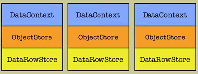
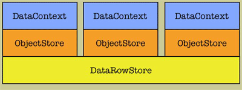
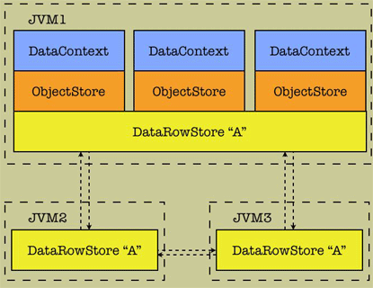

4. Design

4.9 Understanding Caching
Cayenne implements advanced caching mechanism that has a goal of improving
application performance and ensuring data consistency across Java applications
and sessions within the same application. The following classes participate in the caching
mechanism:
- DataObject
Any persistent object, tracks the version of snapshot it was last updated with.
- DataRow
Immutable snapshot of a database row. Has a VM-unique version identifier.
- ObjectStore
Stores DataObjects using ObjectIds as keys.
- DataRowStore
Stores snapshots as DataRows using ObjectIds as keys.
4.9.1 Levels of Caching
Cayenne implements the following levels of caching:
- Level 1 - No Cache Sharing
DataContext keeps its own cache - data fetched from the database via a given DataContext
is never shared with other local or remote DataContexts. Changes made on commit are not
propagated to other DataContexts.

- Level 2 - Local VM Cache Sharing
Each DataDomain keeps the cache shared by all DataContexts in the same VM. Changes made
via one of the DataContexts are propagated via a SnapshotEvent to other DataContexts in the same VM.

- Level 3 - Cross-VM Cache Sharing
Behaves just like Level 2, but also synchronizes caches across JVMs. SnapshotEvents are
sent remotely via a preconfigured transport mechanism. Notification channels are using
DataDomain name to identify which remote domains should receive the event.

 Note:
Note:
Cayenne 1.0 implements only Level 1 caching, Cayenne 1.1 supports all three of them.
|
Caching properties are configured using CayenneModeler for each application DataDomain.
Application code is normally independent from a chosen level, i.e. it does not have to be changed when
caching is reconfigured. Details on caching configuration are provided in the Modeler Guide.
4.9.2 Synchronizing ObjectStores using SnapshotEvents.
DataRowStore posts SnapshotEvents for any changes made to the cache. ObjectStore(s) using
a give DataRowStore are automatically registered as listeners for SnapshotEvents and update their
state accordingly. Application objects can also take advantage of the events by implementing
SnapshotEventListener interface and registering with EventManager:
SnapshotEventListener customListener;
DataRowStore cache;
...
EventManager.getDefaultManager().addListener(
customListener,
"snapshotsChanged",
SnapshotEvent.class,
cache.getSnapshotEventSubject());
|
4.9.3 Concurrent Updates of the Same DataObject.
If two or more users update their local copies of the same object,
Cayenne implements the following behavior:
- Whenever a local modification of an object is detected, its
snapshot is "retained" by ObjectStore, so that any changes to the underlying
DataRowStore could not affect modification process of this object.
- On commit an UPDATE query is built based on retained snapshot, and not the one
currently cached in DataRowStore (this may or may not be the same DataRow).
If the changes were made to a different set of attributes, this allows concurrent
modification of the same object by different users without overwriting each
other's changes.
- Due to concurrency issues discussed above, if a snapshot versions
conflict occurs, DataRowStore removes a given snapshot from the cache
to avoid dealing with concurrency effects on merging.
|